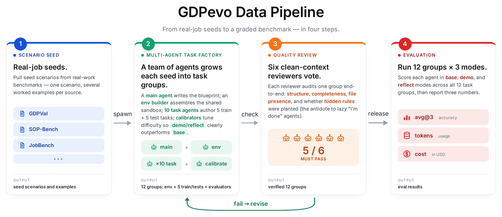

no_skill
Cold start裸做
The agent goes in cold, with no prior training tasks and no skill notes.agent 裸做，没有任何先验任务，也没有 skill 笔记。
Blog · 2026 · PrismShadow team博客 · 2026 · PrismShadow 团队
Most agent benchmarks ask: can the agent solve this task? GDPevo asks a different question: can the agent get better at a class of tasks by learning from related ones? We think that's the more honest question for agents meant to be useful at real business work — and we built GDPevo to make it measurable. 大多数 agent benchmark 问的是：这个 agent 能不能解决这个任务？ GDPevo 问的是另一个问题： 这个 agent 能不能通过相关任务的经验，越来越擅长这一类任务？ 我们认为，对于真正想在业务工作中派上用场的 agent 来说， 后者才是更诚实的问题，于是我们做了 GDPevo，让这件事变得可衡量。
1 · GDP-worthy tasks1 · 真实业务任务
In one line: most agent benchmarks test agents on neat, self-contained problems. Very few test them on the kind of messy, repetitive work that real businesses actually pay people to do. 一句话总结：大多数 agent benchmark 测的是干净、自包含的小题目，几乎没有人测真正在企业里跑、又乱又重复的那种活。
The work that runs a business is repetitive but not identical. Today's lead handoff is yesterday's lead handoff with a new sponsor list. Today's expense review is last week's review with a new vendor. The tasks rhyme; the data does not. 企业里跑的活有一个特点：重复，但不完全相同。今天的销售线索交接和昨天的几乎一样，只是赞助商名单换了。 今天的报销审核和上周的几乎一样，只是供应商换了。任务长得像，数据不一样。
GDPevo's tasks come from work that actually moves money: reconciling an event sponsorship across CRM, finance, and badge systems; deciding whether a vendor invoice should be paid given the receiving record; assembling a credit memo for a small-business loan committee. There are 12 task groups across CRM, ERP, and Finance, seeded from public sources of real-job tasks such as GDPVal and SOP-Bench. Every group looks like a real company's working surface — web consoles, APIs, databases, ledgers — with plenty of lookalike records mixed in to throw a careless agent off. The agent has to find the right invoice in a real-feeling system, not pick from a clean prompt with the answer already filtered for it. GDPevo 的任务都是真正会动钱的工作：把一场展会的赞助情况在 CRM、财务和胸卡系统三方对账； 根据收货记录决定一张供应商发票要不要付；为小企业贷款审议会准备一份 credit memo。一共 12 个 task group，覆盖 CRM、ERP 和 Finance 三大类， 场景来自像 GDPVal 和 SOP-Bench 这样的真实工作任务源。 每一组 task group 看起来都像一家真实公司的工作面：Web 控制台、API、数据库、账本，并且故意混入了一堆"长得很像但不是答案"的干扰记录， 把粗心的 agent 引偏。Agent 必须在一个像真实公司的系统里找到那张正确的发票，而不是从一段已经替它筛过答案的干净 prompt 里挑。
2 · The capability we care about2 · 我们关心的能力
In one line: an agent that solves 100 unrelated tasks tells us almost nothing about whether it is learning from them. The interesting question is whether yesterday's task makes the agent better at today's. 一句话总结：一个 agent 把 100 个互不相关的任务都做对，几乎说明不了它有没有从中学到东西。 真正有意思的问题是：昨天做过的任务，能不能让它今天做得更好。
Each task group ships with 5 train tasks and 5 held-out test tasks that share the same business environment. We compare three settings on the held-out tests. 每一组 task group 包含 5 个 train task 和 5 个 held-out test task， 它们共享同一个业务环境。我们在这 5 个 held-out test 上对比三种设定。
CRM console, REST APIs, ERP records, finance & banking workspaces.CRM 控制台、REST API、ERP 记录、金融与银行工作区。
Related earlier work the agent learns from — the way a new analyst learns on the job.agent 据以学习的相关旧任务 —— 就像新分析师在岗位上学习。
Never seen by the skill-writer; scored by exact, rule-based evaluators.skill-writer 从未见过；由精确的规则评测器评分。
no_skill
The agent goes in cold, with no prior training tasks and no skill notes.agent 裸做，没有任何先验任务，也没有 skill 笔记。
demonstration_skill
The agent reads the train inputs and answers and writes a reusable skill from them — the way a new analyst might if shown a folder of worked examples.agent 看完 train 的输入和答案后，自己总结写出一份可复用的 skill —— 就像新分析师拿到一沓"做好的样例"翻一翻、整理出工作笔记。
reflection_skill
The agent first attempts the train tasks blind, gets graded, and reflects on its mistakes before writing the skill — closer to how a person actually learns on the job.agent 先盲做 train task，被对答案打分后反思自己错在哪里，再据此写 skill —— 这更接近一个人真正在岗位上学习的方式。
The number we care about is the lift from no_skill to the skill settings on tasks the skill-writer never saw.
我们关心的指标，是从 no_skill 到 skill 设定下的 lift（提升）—— 而且是测在 skill-writer 没见过的 test 任务上的提升。
3 · How the dataset is built3 · 数据集是怎么构造的
In one line: if we want to know whether the agent really learned something, the training tasks have to teach a real lesson — one that actually pays off on the test. Otherwise any improvement could just be luck. 一句话总结：要想知道 agent 是不是真的学到了东西，train 任务必须真的"教会一个东西" —— 一个在 test 上能派上用场的东西。否则任何提升都可能只是运气。
For every task group we plant a small set of hidden operational rules. A typical CRM lead-capture group might encode a sponsor-status precedence rule (finance invoices outrank badge scans), a suppression-list policy (do not contact certain segments), and a date-rounding convention. We then spread these rules across the 5 train tasks, so each train task only exercises a subset. The 5 test tasks are deliberately built as combinations of those rules — say, the precedence rule together with the suppression policy. 对于每一个 task group，我们都会埋下一小组隐藏的业务规则。一个典型的 CRM 销售线索捕获场景， 可能埋了三条规则：赞助商身份的优先级判定（财务发票优先于胸卡扫描）、suppression list 政策（某些细分人群禁止联系）、以及一条日期取整规则。 然后我们把这几条规则分散到 5 个 train task 里，每个 train task 只触发其中一部分。5 个 test task 则故意被设计成这些规则的 组合 —— 比如同时触发"优先级判定 + suppression list 政策"。
An agent that handles each train task on its own learns the rules in pieces. An agent that writes them down as a single reusable skill has all the rules in one place — so when the test asks for two of them at once, it doesn't need to rediscover them. That's why a higher test score is real evidence of learning, not luck. 只盯着一个个 train task 单独做的 agent，学到的是碎片。把这些规则整理成一份可复用 skill 的 agent，把所有规则都放在一个地方 —— 这样当 test 一次性问到两条规则时，它不需要再去重新发现。这就是为什么 test 分数变高是真的"学到了"，而不是运气。
In one line: if we want agents to keep getting better on their own, then writing the practice problems, tuning their difficulty, and grading the answers should also be things agents can do — not just things humans do for them. 一句话总结：如果我们指望 agent 能自己越变越好，那么写练习题、调难度、给答案打分这些事，也得是 agent 自己能干的， 而不是只能由人代劳。
Every task group in GDPevo was built and reviewed by Codex agents — no hand-written tasks, no hand-written graders. GDPevo is, in part, a small working demonstration of that loop: a curriculum that agents can both consume and create. GDPevo 里的每一组 task group 都是 Codex agent 构造和审核的 —— 没有人手写任务，也没有人手写打分逻辑。 GDPevo 在某种意义上就是这个闭环的小型工作样例：一份 agent 既能消费、也能创建的 curriculum。

4 · How the benchmark is used4 · 这个 benchmark 怎么用
In one line: using another LLM as the judge is convenient but quietly unreliable on business work. It tends to forgive the mistakes that matter and complain about differences that don't. 一句话总结：用另一个 LLM 当裁判很方便，但在业务工作上其实悄悄地不可靠 —— 它会放过那些真正该扣分的错误，又会因为一些根本无所谓的差异扣你的分。
GDPevo grades with rule-based checkers that look at the things a human reviewer would actually check — was the right set of records returned, was the right exclusion reason given, did the amount round to the right precision, did the action count match. When an agent fails, the failure points to a specific rule it broke, not a vague verdict. The heavier weight in the rubric goes to checks that require real exploration and knowledge carried over from training; getting the JSON to parse is a baseline, not a score. GDPevo 用的是基于规则的 checker，去检查那些人工审核员真正会去检查的东西：返回的记录集对不对、 给的排除原因对不对、金额是否按要求精度取整、动作数对不对。当 agent 错了，错误能直接定位到它违反了哪一条具体规则，而不是给你一个含糊的整体结论。 Rubric 里更高的权重留给"真正需要去探索、需要把 train 阶段学到的东西用上"的检查点；JSON 能 parse 这件事是底线，不是得分项。
Cost reported alongside accuracyCost 和 accuracy 一起报告
In one line: a useful agent is not just one that gets the right answer. It is one that stops redoing the same legwork — clicking through the same systems, looking up the same records — every time a similar task comes in. 一句话总结：一个有用的 agent，不仅是答得对的 agent；还得是一个不会每次都把同样的活儿重做一遍 —— 不会每次都重新点开同样的系统、查同样的记录 —— 的 agent。
We ran the same 12 task groups under two different agent harnesses, and the shape of the result is the same on both: skills lift held-out accuracy while spending fewer tokens, not more. 我们在同样这 12 组 task group 上跑了两套不同的 agent harness，两套结果的形状是一样的：skill 在提升 held-out 准确率的同时， 花的 token 更少，而不是更多。
no_skill48.35%709.21.08demonstration65.99%466.10.81reflection67.13%458.70.79no_skill49.11%376.80.61demonstration70.90%340.80.55reflection67.94%331.90.56
On one task group — operational financial modeling — Codex went from 42.76% to 92.47%
with fewer tokens than cold start; on the same group, Claude Code's demonstration_skill reached
100%, up from 51.76%. Board-level summaries put skill-based evolution at
+20.31 points / −8.69% cost for Claude Code, and +18.21 points / −25.75% cost for
Codex.
在一组任务上 —— operational financial modeling —— Codex 从 42.76% 提升到 92.47%，且花的 token 比冷启动还少；
同一组上，Claude Code 的 demonstration_skill 这次达到了 100%，起点是 51.76%。Board 口径汇总：Claude Code 是
+20.31 个百分点 / −8.69% cost，Codex 是 +18.21 个百分点 / −25.75% cost。
5 · Easy to use5 · 用起来很简单
In one line: there is no SDK to learn and no glue code to write. You point a coding agent at our evaluation workspace, type one sentence, and it generates skills, runs the solver, calls the graders, and writes the report — all by itself. 一句话总结：没有要学的 SDK，也没有要写的胶水代码。你把一个 coding agent 指向我们的评估工作区， 敲一句话，它就会自己生成 skill、跑 solver、调用 grader、写出 report —— 全程不用你插手。
Because GDPevo is built and graded by agents, running it works the same way. The whole evaluation workspace is a folder of plain Markdown — guides, prompts, directory layout — that any modern coding agent can read and follow. You drop a task group in, open the workspace in Codex or Claude Code, and ask it to evaluate. The numbers in the tables above were produced by exactly this process — not by a custom harness we wrote behind the scenes. 因为 GDPevo 本身就是由 agent 构造和评分的，所以跑它也是同一套方式。整个评估工作区就是一个装满纯 Markdown 的文件夹 —— 指南、prompt、目录结构 —— 任何一个现代 coding agent 都能读懂并照着做。你把一组 task group 放进去，用 Codex 或 Claude Code 打开这个工作区， 让它去评估就行。上面表格里的数字，正是用这套流程跑出来的 —— 而不是出自我们在背后另写的一套定制 harness。
For the full setup steps, see the repository README →完整的搭建步骤见 repository README →
An invitation邀请
The tasks, environments, graders, generated skills, and full reports are open. Bring your own agents and scenarios. Submit harder hidden rules. The goal is not a leaderboard, but a public surface where agents that actually do productive work can be trained — and where the evidence of that improvement is open to inspection. 任务、环境、grader、生成的 skill 包、完整 report 都是开放的。欢迎带上你自己的 agent、你自己的业务场景，欢迎来挑战、欢迎提交更难的隐藏规则。 我们的目标不是一张 leaderboard，而是一个公共的 surface —— 让真正能干生产力工作的 agent 在这里被训练出来，并且这种"它真的变好了"的证据可以被任何人审计。
@misc{gdpevo2026,
title = {GDPevo: Measuring Agent Self-Evolution on Real Business Work},
author = {PrismShadow team},
year = {2026},
url = {https://github.com/Prism-Shadow/GDPevo}
}